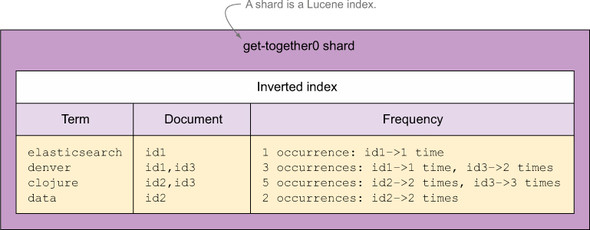
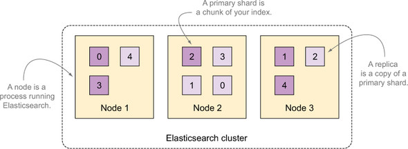
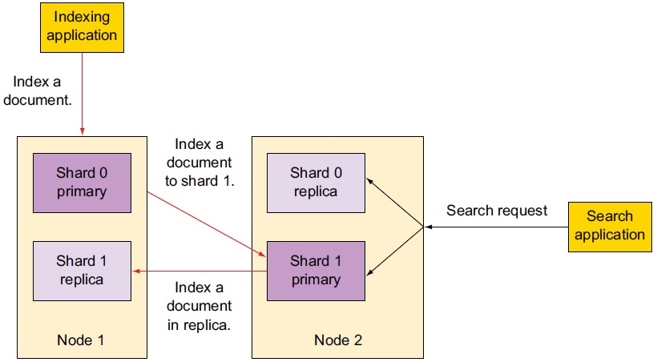
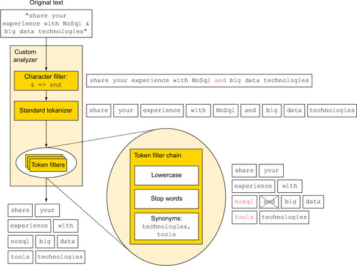

ElasticSearch (快速检索)
Table of Contents
1 基本概念
1.1 存储结构
1.1.1 Node
Elastic 本质上是一个分布式数据库，允许多台服务器协同工作，每台服务器可以运行多个 Elastic 实例。
单个 Elastic 实例称为一个节点（node）。一组节点构成一个集群（cluster）。
1.1.2 Index
Elastic 会索引所有字段，经过处理后写入一个反向索引（Inverted Index）。查找数据的时候，直接查找该索引。
所以，Elastic 数据管理的顶层单位就叫做 Index（索引）。它是单个数据库的同义词。每个 Index （即数据库）的名字必须是小写。
下面的命令可以查看当前节点的所有 Index。
curl -X GET 'http://localhost:9200/_cat/indices?v'
1.1.2.1 Inverted Index 1
| ID | Tags |
|---|---|
| 1 | elections |
| 2 | peace |
| 3 | elections, peace |
| 4 | peace |
转换成反向索引：
| Tags | IDs |
|---|---|
| elections | 1,3 |
| peace | 2,3,4 |
1.1.3 Document
Index 里面单条的记录称为 Document（文档）。许多条 Document 构成了一个 Index。
同一个 Index 里面的 Document，不要求有相同的结构（scheme），但是最好保持相同，这样有利于提高搜索效率。
1.1.4 Type
Document 可以分组，比如 weather 这个 Index 里面，可以按城市分组（北京和上海），
也可以按气候分组（晴天和雨天）。这种分组就叫做 Type，它是虚拟的逻辑分组，用来过滤 Document 。
Elastic 6.x 版只允许每个 Index 包含一个 Type，7.x 版将会彻底移除 Type。
1.1.5 Shard
A shard is a Lucene index: a directory of files containing an inverted index.
A shard can be either a primary or a replica shard.
A replica is used for searching, or it becomes a new primary shard if the original primary shard is lost.

Figure 1: Term dictionary and frequencies in a Lucene index
1.2 集群

Figure 2: A three-node cluster with an index divided into five shards with one replica per shard
1.2.1 集群分片
集群中的主分片解决高负载问题，复制分片解决高可用问题。
分片是 针对 Index 而言的 ，即一个 Index 可以设置存储到多少分片上，Index 只是用来指向一个或多个分片的 逻辑命名空间 。
当 Index 创建完成时，主分片数量就确定下来了 ，复制分片的数量可以随时调整。
当索引一个文档时，会被存储在 单独 一个主分片上（由哈希算法决定具体哪个分片）。
如果主分片的数量在未来被改变了，所有先前的路由值就将失效，文档就再也搜索不到了。
1.2.2 集群健康
绿色
所有主分片和复制分片均可用
黄色
所有主分片可用，复制分片并非都可用
红色
主分片并非都可用
1.2.3 集群中对文档创建索引

Figure 3: What happens when you index a document
- Documents are indexed to random primary shards and their replicas.
- Searches run on complete sets of shards, regardless of their status as primaries or replicas.
1.3 分词

Figure 4: Overview of the analysis process
1.4 相关性
一个词条出现在某个文档中的次数越多，它就越相关。但是，如果该词条出现在不同的文档的次数越多，它就越不相关。
这一点被称为 TF-IDF 。
1.4.1 boost
用来修改（提升）文档的相关性。
2 增删改查 2
2.1 Mapping
2.1.1 Get API
2.1.2 Put API
- 如果更新一个存在的 mapping，Elasticsearch 会将两者进行合并(merge)
- 不能修改已经存在的字段的类型，除非删除数据(mapping 也会被删除)，并重新建立索引
2.1.2.1 Mapping 设置
2.1.2.1.1 fields
fields 是使用多种不同的设定对同一数据进行多次索引。
2.1.2.1.2 index
用于决定是否对字段建立索引。
2.1.2.1.4 dynamic
true
Newly detected fields are added to the mapping. (default)
false
Newly detected fields are ignored. These fields will not be indexed so will not be searchable but will still appear in the _source field of returned hits. These fields will not be added to the mapping, new fields must be added explicitly.
strict
If new fields are detected, an exception is thrown and the document is rejected. New fields must be explicitly added to the mapping.
2.2 Updating
2.2.1 API
- 部分更新
- 支持
upsert - 可以使用
script进行更新
2.2.2 并发控制
文档创建时会生成三个数值 version, seq_no 和 primary_term ：
seq_no和primary_term用于内部版本控制(要与需更新文档的值相同)version用于外部版本控制 (外部的version要大于文档的version)
使用 Update API 时可以指定 retry_on_conflict 参数进行并发控制。
2.4 Quering
2.4.1 explain
查看整个执行计划
GET /get-together/_search?explain=true HTTP/1.1
{
"query": {
"match": {
"name": {
"query": "Elasticsearch"
}
}
}
}
2.4.2 filter
Elasticsearch uses filter to filter out the documents that it shouldn't be searching based on the query part of the search.
Because of this, filtering can be much faster than combining the entire query into a single search.
Depending on what kind of filter is used, Elasticsearch can cache the results in a bitset,
so if the filter is used for another search, it doesn't have to be calculated.
Make parts of your query into filters if you can to speed the search.
2.4.3 match_all
用于返回所有 doc
{
"query": {
"match_all": {}
}
}
with filter:
{
'query': {
'bool': {
'must': {
'match_all': {}
},
'filter': {
}
}
}
}
2.4.4 query string
A query_string search can be performed either from the URL of the request or sent in a request body.
curl -XGET 'localhost:9200/_search?q=nosql&pretty'
If you don't need to support a query syntax, consider using the match query.
2.4.5 term query
Note that because the term being searched for isn't analyzed, it must match a term in the document exactly for the result to be found.
2.4.6 bool query
The Bool query allows you to combine any number of queries into a single query by specifying a query clause that
indicates which parts must, should, or must not match the data in your Elasticsearch index.
| Bool clause | Equivalent |
|---|---|
| must | q1 AND q2 AND q3 |
| must_not | NOT q1 AND NOT q2 AND NOT q3 |
| should | q1 OR q2 OR q3 |
2.4.6.1 minimum_should_match
- If the bool query includes at least one should clause and no must or filter clauses, the default value is 1.
- Otherwise, the default value is 0.
2.4.7 match / multi_match
match and multi_match queries behave similarly to the term query,
except that they analyze the field being passed in.
2.4.7.1 布林查询行为
2.4.7.1.1 AND
By default, the match query uses the OR operator.
For example, if you search for the text "Elasticsearch Denver" Elasticsearch searches for "Elasticsearch OR Denver".
2.4.7.1.2 OR
{
"query": {
"match": {
"name": {
"query": "elasticsearch denver",
"operator": "and"
}
}
}
}
2.4.7.2 match phrase
查询分词文本，并从分词后的文本中创建短语查询， match_phrase 的主要作用是用于匹配包含当前短语的文档。3
GET /_search
{
"query": {
"match_phrase" : {
"message" : "this is a test",
"analyzer":"english",
"slop":0
}
}
}
slop 的数值意味着输入的短语中每个词项 (term) 之间允许隔着几个词项 (term) 。
2.4.7.3 match phrase prefix
与 match_phrase 类似，但是它多了一个特性，就是它允许在文本的最后一个词项 (term) 上的前缀匹配。
如果是一个单词，比如 a ，它会匹配文档字段所有以 a 开头的文档；如果是一个短语，比如 "this is ma" ，
则它会先进行 match_phrase 查询，找出所有包含短语 "this is" 的文档，然后在这些匹配的文档中找出所有包含以 "ma" 为前缀的文档。
{
"query": {
"match_phrase_prefix": {
"title": {
"query": "this is r",
"analyzer": "standard",
"max_expansions": 10, // 控制最大的返回结果
"slop":2,
"boost":100
}
}
}
}
2.4.7.4 multi_match
Exactly like the match query, except that multiple fields can be specified for searching instead of a single field only.
3 工具
- Cerebro 4